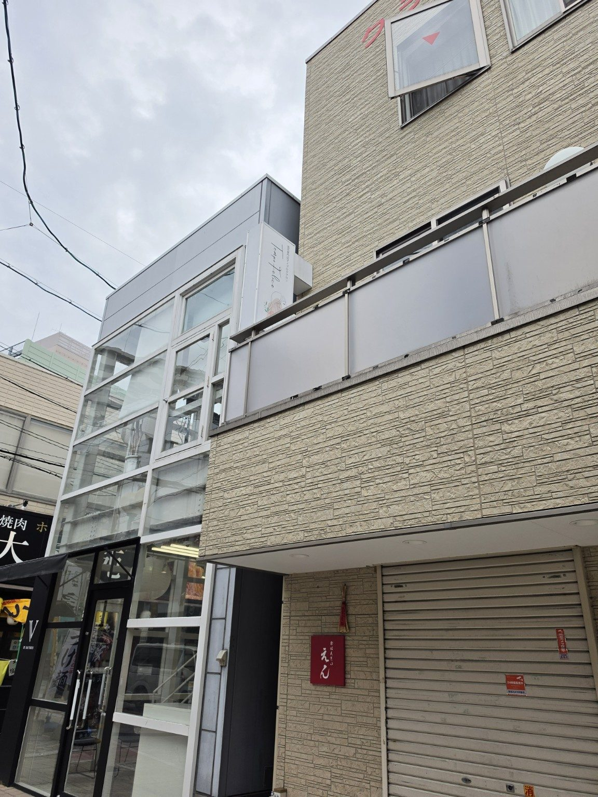
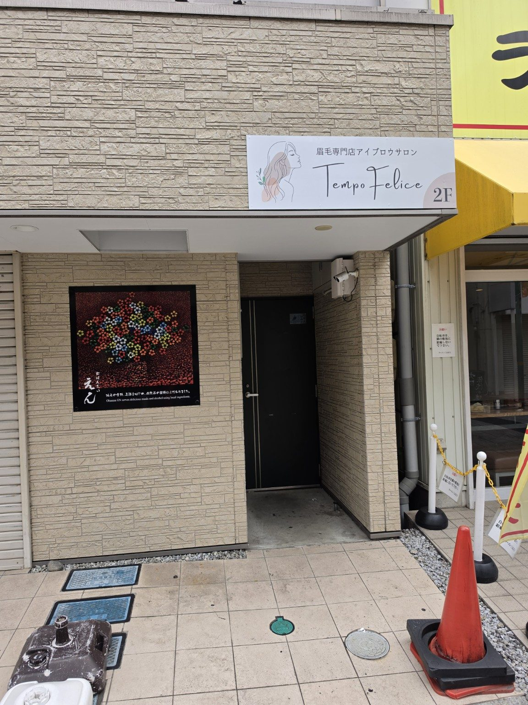

丁寧なカウンセリング
骨格・雰囲気・ライフスタイルに寄り添い、自然に馴染む眉をご提案します。
Eyebrow Salon Brand
眉を変えることで、表情が変わる。
表情が変わることで、毎日が少し前向きになる。
TempoFeliceは、あなたらしい美しさを引き出し、日々に幸福な時間を届けるアイブロウサロンです。
A happy time for your everyday.
鏡を見るたびに、少し前向きになれる。
そんな幸福な時間を、眉から。
Concept
TempoFeliceが大切にしているのは、ただ眉を整えることではありません。 お客様一人ひとりの骨格・雰囲気・ライフスタイルに寄り添い、自然体で美しくいられる眉をご提案します。
鏡を見るたびに、少し前向きになれる。
自分の表情をもっと好きになれる。
そんな幸福な時間を、TempoFeliceはお届けします。
Why TempoFelice
TempoFeliceは、眉を整える時間を、毎日を前向きに変えるきっかけに。 仕上がりの美しさだけでなく、過ごす時間の心地よさまで大切にしています。
骨格・雰囲気・ライフスタイルに寄り添い、自然に馴染む眉をご提案します。
作り込みすぎず、あなたらしさを引き出すアイブロウデザインを大切にしています。
浜松・浜松駅前・静岡・鹿児島天文館に展開。ライフスタイルに合わせて通いやすく。
清潔感や第一印象を整えたい方、初めて眉毛サロンを利用する方も安心してご相談ください。
Service
眉WAX＋美眉スタイリング、HBL、眉WAX、間引きなど、眉毛サロンとして一人ひとりに合わせた施術をご提案します。 料金・空き状況・詳しいメニューは、各店舗のHot Pepper Beautyページよりご確認ください。
余分な産毛やラインを整え、骨格や雰囲気に合わせた自然な美眉へ導きます。
ハリウッドブロウリフトで毛流れを整え、眉WAXとスタイリングで立体感のある眉へ。
眉の毛流れを整え、ふんわりと扱いやすい印象へ。毎日のメイク時間も心地よく。
眉まわりの不要な毛を整え、清潔感のあるすっきりとした印象に仕上げます。
眉の濃さや重さを調整し、抜け感のあるやわらかな印象に整えます。
第一印象を整えたい男性のお客様や、学生のお客様にも通いやすいメニューをご用意しています。
Flow
初めての方にも安心してお過ごしいただけるよう、カウンセリングから仕上げまで丁寧にご案内します。
お悩みや理想のイメージ、普段のメイクについて丁寧にお伺いします。
骨格や毛流れ、雰囲気に合わせて、あなたらしい眉の形をご提案します。
眉WAX、HBL、間引きなど、メニューに合わせて丁寧に整えていきます。
仕上がりを確認し、日々のメイクやお手入れ方法もお伝えします。
FAQ
はい、初めての方も安心してご来店ください。カウンセリングで理想の雰囲気やお悩みを伺いながら、似合う眉をご提案します。
よりきれいに整えるため、できるだけ自己処理を控えた状態でのご来店がおすすめです。
普段のメイクの雰囲気を見ながらご提案できるため、いつものメイクでお越しいただいても大丈夫です。
はい、メンズアイブロウにも対応しています。清潔感や第一印象を整えたい方にもおすすめです。
Salon
各店舗の詳細・ご予約は、Hot Pepper Beautyよりご確認いただけます。 Instagramや公式LINEは準備が整い次第、順次公開いたします。
Shizuoka
〒435-0053
静岡県浜松市中央区上新屋町217-1 casitaA
浜松駅から車で15分 / イオン浜松市野から車で5分


Hamamatsu Sta.Shizuoka
〒430-0934
静岡県浜松市中央区千歳町102 クラシキビル2階
浜松駅北口から徒歩3分
Shizuoka
〒420-0032
静岡県静岡市葵区両替町2丁目6番地 河村ビル2B
静岡駅北口徒歩7分
Kagoshima
〒892-0842
鹿児島県鹿児島市東千石町5-8 KYビル302
鹿児島天文館エリアにオープン予定。詳細情報・予約ページは準備が整い次第公開いたします。
Company
TempoFeliceは、合同会社Axis Agencyが運営するアイブロウサロンブランドです。
私たちは、美容を通じて人々の表情と日々の時間に前向きな変化を届けることを目指しています。 また、Axis Agencyでは美容サロン運営に加え、モバイル販売支援事業も展開しています。
お客様に幸福な時間を届けること。
そして、共に働く仲間が前向きに成長できる環境をつくること。
それが私たちの大切にしている想いです。